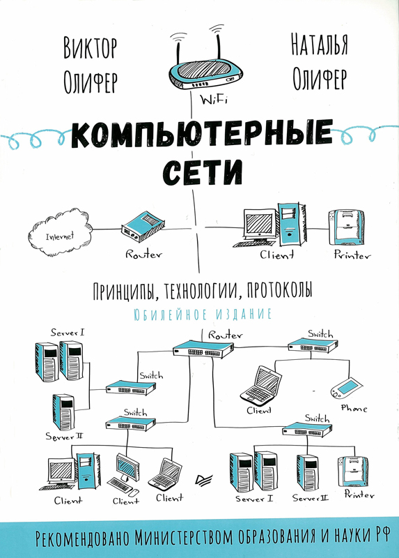

Описание
Как следует из определения, TCP/IP - это сетевая модель передачи данных, описывающая способ передачи данных от источника информации к получателю. Настоящее руководство является полным энциклопедическим справочником по протоколу TCP/IP и рассматривает основы его работы на более сотни примерах и иллюстраций.
Общая информация
Автор
Charles M. Kozierok
Год издания
2005
Язык
Английский
Число страниц
2096
Формат
Похожее
Python для сетевых инженеров
Python — идеальный язык для сетевых инженеров, предлагающий инструменты, которые ранее были доступны только системным инженерам и разработчикам приложений. Третье издание полностью переработано и обновлено для использования Python 3.

Компьютерные сети. Принципы, технологии, протоколы
Рекомендовано Министерством образования и науки Российской Федерации в качестве учебного пособия для студентов высших учебных заведений
Компьютерные сети
В книге последовательно изложены основные концепции, определяющие современное состояние и тенденции развития компьютерных сетей. Авторы подробнейшим образом объясняют устройство и принципы работы аппаратного и программного обеспечения, рассматривают все аспекты и уровни организации сетей — от физического до уровня прикладных программ.
Тестирование на проникновение в сеть
В начале книги изучаются хакерские приемы и инструменты пентестинга; затем поэтапно описываются действия, которые злоумышленник предпринимает для захвата контроля над корпоративной сетью. Это позволит выявить критические проблемы безопасности и представить результаты пентеста, показывающие, как лучше защитить корпоративную сеть.